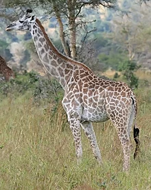
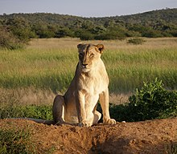
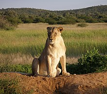
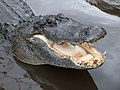

A bear is a large mammal belonging to the family Ursidae, typically characterized by a powerful build, shaggy fur, and a plantigrade stance. Bears are omnivorous and found across various habitats worldwide.

A giraffe is a tall, long-necked mammal native to Africa, known for its distinctively elongated neck and legs, patterned coat, and herbivorous diet.
A lion is a large carnivorous mammal belonging to the Felidae family, known for its muscular build, golden fur (in males), and social behavior within prides. Lions are apex predators found primarily in Africa and a small population in the Gir Forest of India.
A lioness is a female lion, characterized by her smaller size compared to male lions, typically responsible for hunting in prides while males defend the territory. Lionesses play a crucial role in raising cubs and maintaining the pride's social structure.
 

A monkey is a type of primate characterized by a flexible body structure, opposable thumbs, and a high level of intelligence. Monkeys are known for their arboreal (tree-dwelling) lifestyles in tropical and subtropical regions worldwide.

An alligator is a large reptile belonging to the family Alligatoridae, characterized by a broad snout, a muscular body, and armored skin covered in scales. Alligators are semi-aquatic and primarily found in freshwater habitats in the southeastern United States and parts of China.
